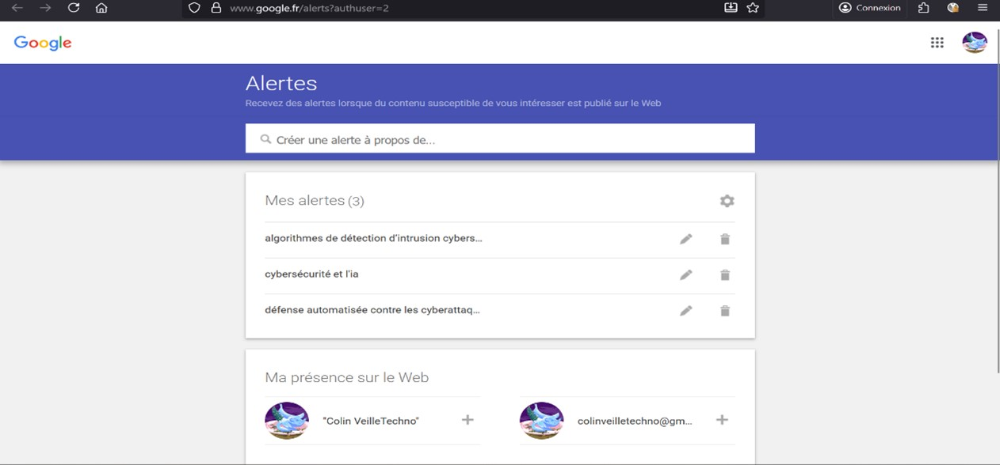

L'IA au service de la Cybersécurité
Analyse de la transformation de la protection des infrastructures par l'intelligence artificielle.
Consulter le rapport complet (PDF)Pourquoi ce sujet ?
Ce sujet a été choisi pour son impact croissant sur la sécurité des infrastructures et mon intérêt pour l’administration systèmes et réseaux. L'objectif est d'analyser comment l'apprentissage automatique devient indispensable face aux menaces modernes.
Outils & Méthodologie

Google Alerts
Curation par mots-clés stratégiques pour une surveillance large du web.
Feedly
Centralisation de flux RSS experts (The Hacker News, DarkReading).
Inoreader
Filtrage avancé et automatisation du tri via des règles intelligentes.
Analyse : Bénéfices & Limites
🚀 Opportunités
- Détection prédictive : Analyse comportementale des menaces.
- Réponse automatisée : Réaction SOAR instantanée.
- Optimisation : Réduction drastique des faux positifs.
⚠️ Nouveaux Risques
- Attaques Adversariales : Empoisonnement des modèles d'IA.
- IA Offensive : Automatisation des attaques par les pirates.
- Complexité : Besoins élevés en expertise et infrastructure.
Horizons 2025-2026
Zero Trust IA
LLM Security
IA Générative en Sécurité